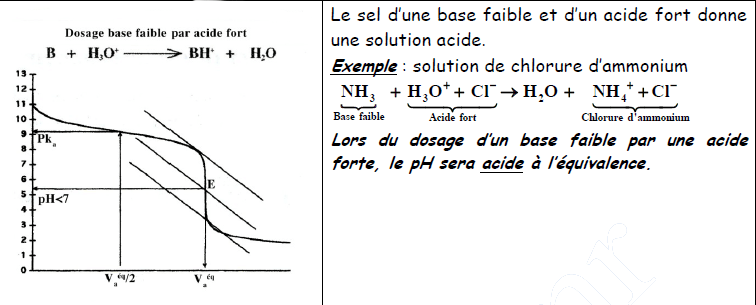

Chapitre IV : Dosage Acide – Base
I - Dosage d’une solution d’acide éthanoïque par la soude
1. Etude expérimentale :
- un bécher contient un volume VA = 20,0 ml d’une solution d’acide éthanoïque de concentration CA = 1,00.10-2 mol/l.
- une burette remplie d’hydroxyde de sodium de concentration CA = 1,00.10-2 mol/l.
- un pH-mètre, préalablement étalonné, permet de mesurer le pH de la solution après chaque ajout de solution d’hydroxyde de sodium.
- un agitateur magnétique assure l’homogénéisation du mélange. Les mesures réalisées en travaux pratiques permettent de tracer le graphe pH = f(VB).
2. Principales caractéristiques du graphe pH = f(VB). La courbe pH = f(VB) peut être décomposée en quatre parties. Cette partie incurvée est caractéristique du dosage d’un acide faible.
- Une partie AB (0 ml ≺ VA ≺ 3 ml) où le pH croit assez nettement.
- Une partie BC (3 ml ≺ VA ≺ 18 ml) où le pH varie peu, la courbe étant quasiment rectiligne.
- Une partie CD (aux environs de VB = 20 ml) où l’on observe une variation de pH, brusque moins importante que pour l’acide chlorhydrique.
- Une partie DF où le pH varie faiblement et tend vers une asymptote horizontale.
Nous constatons, par ailleurs, que la courbe pH = f(VB) change deux fois de concavité : elle présente donc deux points d’inflexions.
3. Equivalence :
La réaction entre les ions OH- et l’acide et l’acide éthanoïque est quasi-totale.
Tant qu’il reste des molécules d’acide, les ions OH- introduits sont consommés et demeurent ultra minoritaires dans le mélange : le pH est alors faible.
Lorsque toutes les molécules d’acide ont réagi, les ions OH- sont en excès : le pH est alors supérieur à 7.
La brusque variation de pH observée correspond donc à la fin de la réaction, ou équivalence.
+ Définition :
A l’équivalence l’acide éthanoïque et les ions hydroxydes ont été mélangé dans
les proportions stoechiométriques :
no(CH3COOH) = n(OH-)introduit à l'équivalence
Nous pouvons écrire : no(CH3COOH) = CA.VA et n(OH-)introduit à l'équivalence = CB.VBE
A l'équivalence : CA.VA = CB.VBE
+ Détermination du point d’équivalence :
L’équivalence de la réaction correspond au point d’inflexion de la courbe dans le domaine du saut de pH. Comme pour l’étude de la réaction acide fort base forte, il est possible de déterminer le point d’équivalence par la méthode des tangentes.
+ pH à l’équivalence :
A l’équivalence, nous lisons pHE = 8,6, la solution est donc basique.
4. Demi équivalence :
La demi équivalence correspond à VB = VBE/2
En ce point, la quantité d’ions hydroxydes introduites ηi(OH-) est égale à la moitié de la quantité d’acide acétique ηo introduit au départ.
Nous pouvons écrire, à la demi-équivalence :
5. Comparaison des courbes de dosage :
A l’équivalence acido-basique, le pH du mélange est celui d’une solution du sel obtenu lors du dosage.
a. Dosage Acide fort/Base forte
b. Dosage Acide faible/Base forte
c. Dosage Base faible/Acide forte

6. Les solutions- Tampon :
a. Définition :
Une solution-tampon est une solution dans laquelle les variations de pH sont modérées. Son pH varie peu même si :
- On ajoute un peu d’acide fort.
- On ajoute un peu d’acide faible.
- On dilue la solution.
La solution-tampon amortit les variations du pH et son pH est égal au pka du couple.
b. Constitution :
1ere Méthode de préparation : Une solution-tampon parfaite est constituée par un mélange équimolaire :
- d’un acide faible et de sa base conjuguée (x moles d’un acide faible et x moles de sa base conjuguée)
- ou un mélange d’une base faible et de son acide conjugué (x moles d’une base faible et x moles de son acide conjugué).
2éme Méthode de préparation : Une solution-tampon est aussi constituée par un mélange de :
- y moles d’un acide faible et y/2 moles de base forte ou y moles d’une base faible et y/2 moles d’acide fort.